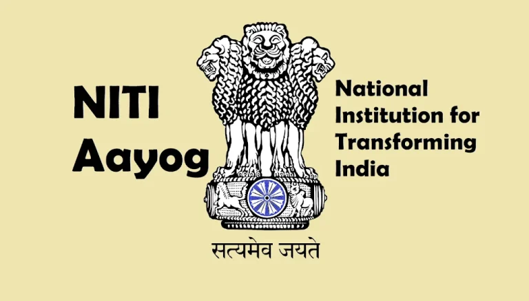
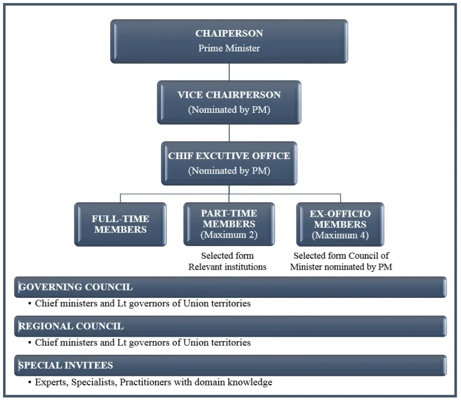
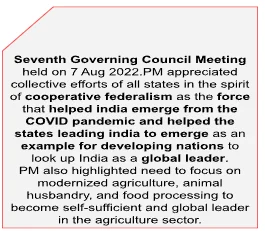
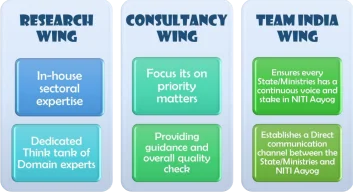

NITI Aayog, the National Institution for Transforming India, is the premier policy think tank of the Government of India. Established in 2015, it replaced the Planning Commission, adopting a bottom-up approach to policy-making to empower state governments and foster cooperative federalism. NITI Aayog aims to drive economic development and facilitate collaboration between the central and state governments.

Establishment of NITI Aayog
- Establishment and Status: In response to evolving needs, the Government of India established NITI Aayog in 2015, replacing the Planning Commission.
- Consultation and Decision-Making: This decision followed extensive consultations with Chief Ministers, experts, economists, and the general public.
- Objectives and Approach: NITI Aayog aims to better serve the people’s needs and aspirations by fostering cooperative federalism and adopting a bottom-up approach to policy-making, thereby empowering state governments and fostering a collaborative spirit.
- Legal Status: NITI Aayog was established through an executive resolution of the Indian government (Union Cabinet). Thus, it is a non-statutory body (not established by a Parliamentary Act) and an extra-constitutional body (not constituted by the Constitution).
Vision for India and Role of Government
India aims to fulfill its citizens’ aspirations and stand proudly on the global stage. Progress and improved governance require active participation from the people. This transformation involves both planned changes and those driven by market forces and global shifts.
Effective governance in India rests on the following pillars:
- Pro-people Agenda: Fulfilling societal and individual aspirations.
- Pro-active Governance: Anticipating and responding to needs.
- Participative Approach: Involving citizens in governance.
- Inclusion: Ensuring all groups are included.
- Equality of Opportunity: Providing equal chances for youth.
- Sustainable Development: Protecting the environment.
- Transparency: Using technology for visible and responsive governance.
- Partnership for Improved Governance: A synergistic partnership among public, private sectors, and civil society.
Evolving Institutional Framework and Need for NITI Aayog
The Planning Commission (established in 1950) faced challenges over time. Its effectiveness was questioned due to its top-down approach, limited state participation, and lack of innovation. To address these shortcomings, NITI Aayog was brought into existence in 2015 to adopt a more inclusive and collaborative approach.
Key Objectives and Principles
- Cooperative Federalism: Fostering a spirit of partnership where central and state governments work together.
- Bottom-Up Approach: Emphasizing planning from the ground up, giving more autonomy to state governments and local bodies.
- Think Tank Role: Providing strategic advice and innovative solutions on economic policy, social policy, and infrastructure.
- Knowledge Center for Governance: Serving as a repository of best governance practices and strategic expertise.
- Collaborative Platform: Bringing together various ministries at national and state levels to pursue developmental objectives jointly.
Composition and Organizational Structure
NITI Aayog is chaired by the Hon’ble Prime Minister of India and includes the following structure:

- Chairperson: The head of NITI Aayog is the Prime Minister of India.
- Governing Council: Includes Chief Ministers of all Indian states, CMs of UTs with legislatures (Delhi, Puducherry, and J&K), and Lt. Governors of other UTs.
- Regional Councils: Set up to address specific issues affecting more than one state. They are temporary and convened by the Prime Minister.
- Special Invitees: Experts, specialists, and practitioners invited by the Prime Minister.
Full-time Organizational Framework
- Vice-Chairperson: Appointed by the Prime Minister, with the rank of a Cabinet Minister.

- Members: Full-time members with the rank of a Minister of State.
- Part-time Members: Max 2 from leading universities and research organizations, serving on rotation.
- Ex-Officio Members: Up to 4 members of the Union Council of Ministers nominated by the Prime Minister.
- Chief Executive Officer (CEO): Appointed by the Prime Minister for a fixed term, holding the rank of Secretary to the GoI.
Specialized Wings
- Research Wing: Develops in-house sectoral expertise as a dedicated think tank of top-notch domain experts.

- Consultancy Wing: Provides a marketplace of vetted panels of expertise. By playing matchmaker, NITI Aayog focuses on priority matters and quality checks.
- Team India Wing: Includes representatives from every state and ministry. It ensures every State/Ministry has a continuous voice and stake, establishing a direct communication channel as a liaison interface.
Guiding Principles and Pillars
- Pro-People: Fulfilling aspirations of society.
- Proactivity: Anticipating and responding to needs.
- Participation: Involving citizens in governance.
- Empowering: Empowering women and marginalized groups.
- Inclusion: Ensuring inclusion of all (SCs, STs, and minorities).
- Equality: Providing equal opportunity for youth.
- Transparency: Making government visible and accountable.
Federalism: Cooperative vs. Competitive
- Cooperative Federalism: Continuous engagement with states. "Strong states make a strong nation". Uses Governing and Regional Councils to tackle issues like COVID-19.
- Competitive Federalism: Fosters horizontal competition among states. Publishes rankings (Ease of Doing Business, Health, Water Management) to drive service delivery improvements.
Planning Commission vs. NITI Aayog
| Planning Commission (PC) | NITI Aayog (NA) |
|---|---|
| Imposed a top-down approach. | Acts as a knowledge hub and facilitator (Bottom-up). |
| Designed uniform schemes ("One Size Fits All"). | Offers strategic and technical advice tailored to needs. |
| Allocated funds directly to states. | No power to allocate funds (handled by Finance Ministry). |
National Development Council (NDC)
Formerly, the NDC approved the 5-year plans. While the NDC still exists, the Governing Council of NITI Aayog now largely serves as the primary forum for state-center dialogue on developmental issues.
Conclusion
NITI Aayog serves as a dynamic institution driving India’s development with a focus on collaboration, innovation, and sustainable practices. By empowering states and acting as a central knowledge hub, it aims to transform India’s policy-making landscape for more effective governance and inclusive growth.